Consuma Cultura
Plataforma para eventos culturales en Bucaramanga. Journey map de dos perfiles, benchmark y definición del problema.
5 años de experiencia diseñando productos end-to-end, especialista en fintech y banca, user research y optimización de la conversión. Diseño productos en base a datos, siempre buscando la mejor experiencia para el usuario.
Trabajo con una metodología end-to-end que abarca todo el ciclo del producto: desde el research inicial hasta el lanzamiento y la optimización continua. No solo diseño pantallas, construyo sistemas que sostienen el crecimiento del producto.
Lidero equipos multidisciplinarios y sirvo de puente entre stakeholders técnicos y de negocio, traduciendo restricciones complejas en decisiones de diseño claras y defendibles. Mi enfoque analítico me permite estructurar soluciones que generan valor real para usuarios y para la organización.
Proyectos propios
Plataforma para eventos culturales en Bucaramanga. Journey map de dos perfiles, benchmark y definición del problema.
Proyectos laborales
Fiduciaria de Bogotá · Apertura del FIC Cubrir Internacional transformada de un proceso presencial de +1 semana a un flujo 100% digital en app.
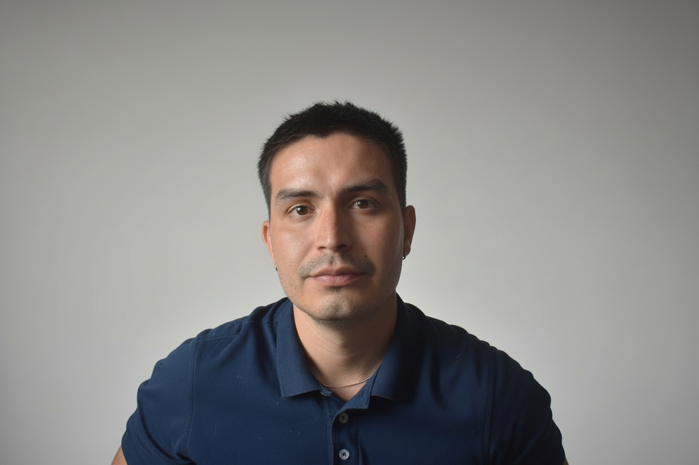
Diseñador UX/UI con 5 años transformando ideas en productos digitales que impactan vidas reales. Trabajo todo el ciclo — research, propuesta, prototipo, lanzamiento — y uso datos para tomar decisiones, no suposiciones.
Me especializo en conectar equipos técnicos y de negocio para construir productos que funcionan de verdad: útiles para quien los usa, valiosos para quien los construye.
Mi trabajo vive en la intersección entre negocio, tecnología y personas. No diseño pantallas — diseño sistemas que crecen con el producto y equipos que los mantienen.
Plataforma digital para la difusión y seguimiento de eventos culturales en Bucaramanga, Colombia. Dos perfiles de usuario, un ecosistema conectado.
El problema central no es la falta de cultura: es la ausencia de infraestructura digital que conecte a quienes producen eventos con quienes quieren asistir, y que genere datos reales sobre el ecosistema cultural de la ciudad.
La agenda cultural depende de canales desconectados con vida útil muy corta. No existe un punto de encuentro digital donde el público pueda descubrir, con certeza, qué está pasando esta semana en la ciudad.
Organizar un evento cultural en Bucaramanga es un acto de fe. El gestor invierte tiempo y recursos sin tener forma de medir el resultado real.
Perfil: Habitante de Bucaramanga, 18-45 años, con interés en actividades culturales pero sin canales para mantenerse informado. Asiste de forma esporádica, más por recomendación directa que por búsqueda activa.
Nivel emocional por etapa
Perfil: Organizador o productor de eventos en Bucaramanga. Invierte tiempo y recursos en producir eventos pero no tiene herramientas para medir su impacto real ni construir una audiencia fiel.
Nivel emocional por etapa
Producto real
Cinco vistas del producto real — desde el home hasta el pasaporte cultural.
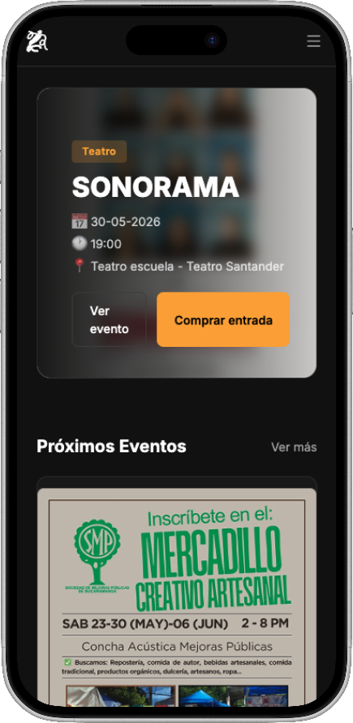
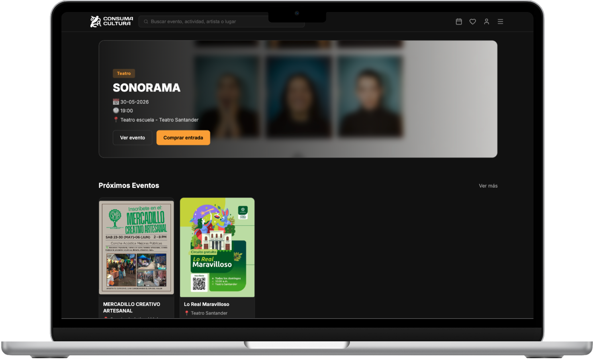
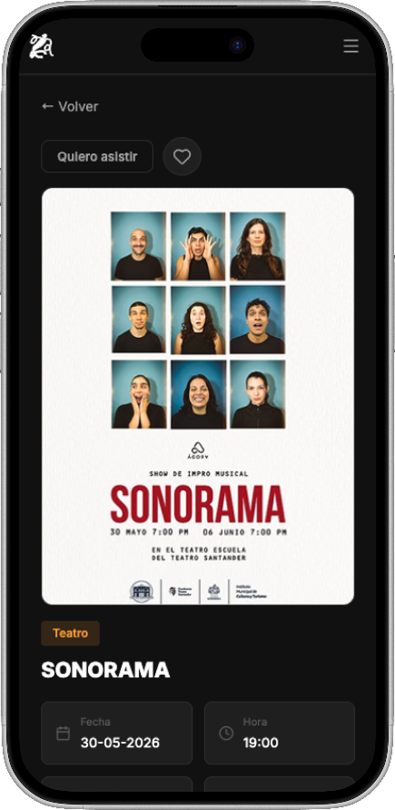
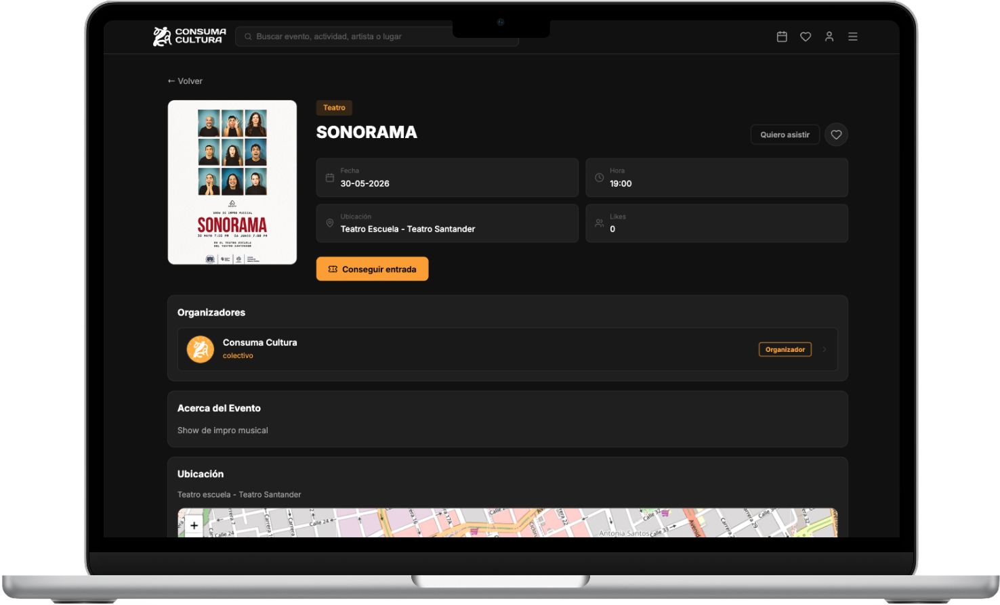
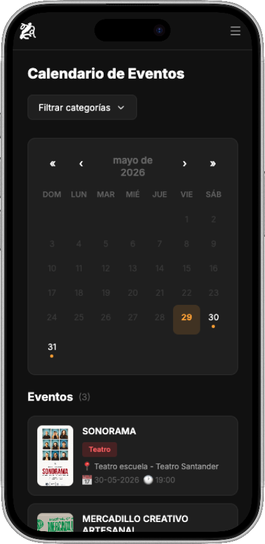
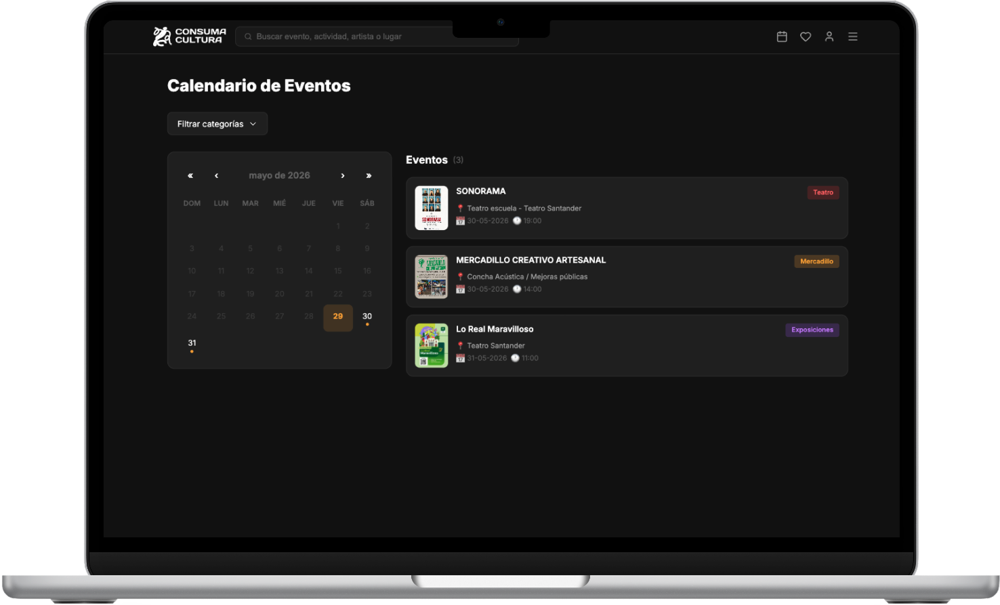
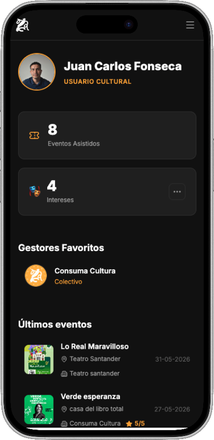
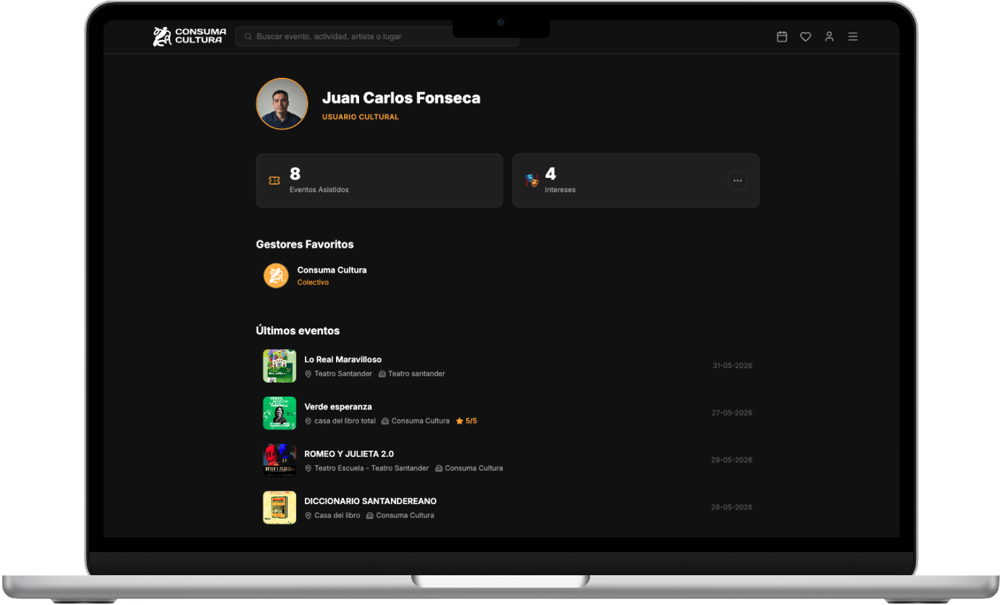
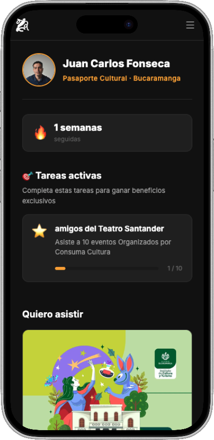
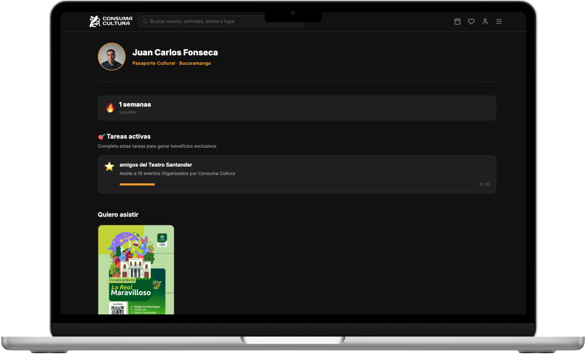
Público General
Gestor Cultural
Transformamos la apertura del FIC Cubrir Internacional de Fiduciaria de Bogotá: de un proceso 100% presencial con más de una semana de duración, a un flujo completamente digital.
El FIC Cubrir Internacional es un fondo de inversión colectivo simple de alto riesgo. Antes de su digitalización, el proceso de apertura era 100% presencial: el usuario debía desplazarse a una oficina, completar una encuesta de perfil de inversionista, conocer el producto y decidir su apertura — con toda la carga legal y financiera por detrás.
El flujo requería múltiples pasos secuenciales que dependían entre sí — validaciones, firmas y aceptaciones. El tiempo total superaba una semana.
El usuario gestionaba varios formatos físicos independientes antes de poder abrir el fondo, generando fricción y abandono en el proceso.
Diseñamos un sistema modular para digitalizar fondos simples, independiente del nivel de riesgo. Cada módulo tiene una función específica y puede combinarse para construir el flujo de cualquier fondo. Básicamente, un sistema tipo Lego.
Landing informativa donde el usuario conoce el fondo antes de iniciar
Verificación de PEPs, operaciones en moneda extranjera y restricciones regulatorias
5 preguntas para determinar el perfil de inversionista del usuario
El sistema recomienda un fondo según los resultados del perfilamiento
El usuario revisa las condiciones del fondo y lo acepta formalmente
Consentimiento de tratamiento de datos y aceptación de términos
El fondo queda activo en la cuenta del usuario de forma inmediata
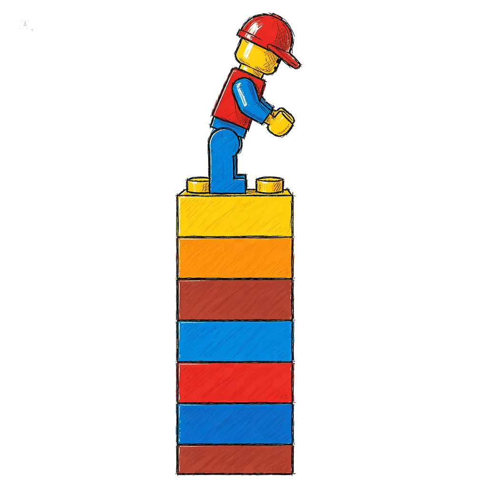
El proceso cubrió desde la investigación de referentes hasta el acompañamiento en producción y la medición de la experiencia con datos reales.
Mes 1
Mes 2
Mes 3
Mes 4